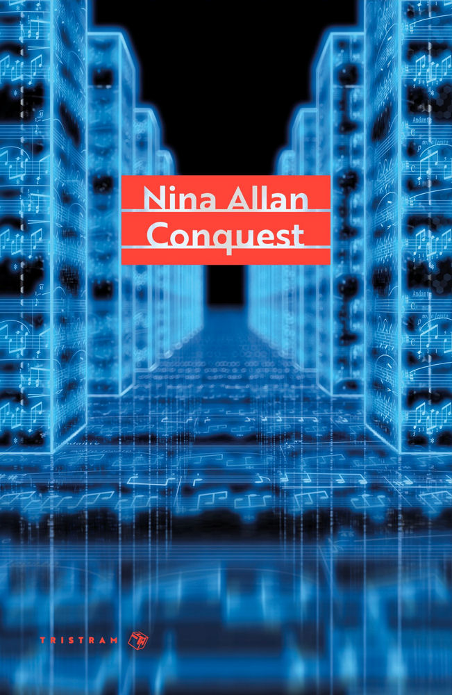
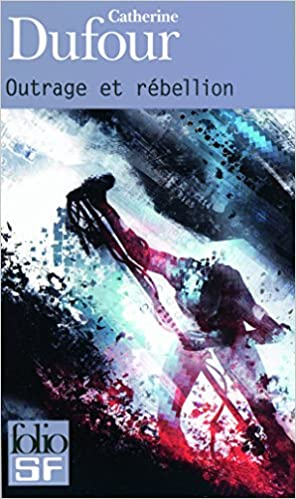
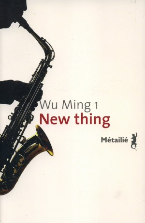

Ce mois-ci, au club de lecture, le thème c’était : “En musique”. Un sujet pour lequel il ne m’a pas été difficile de sélectionner quelques livres (ça a même été plutôt dur de faire le tri). Mes choix ont finalement fait la part belle au classique, au punk et au jazz.

Conquest, que j’ai lu et adoré l’an dernier, m’a donné envie de découvrir davantage la musique “classique” (au sens large du terme, car je n’y connais pas grand-chose), d’écouter des concertos, de choisir des œuvres et de m’y immerger. Dans ce roman de Nina Allan, qui raconte l’enquête d’une détective privée pour retrouver un jeune programmeur disparu (avec des touches de paranoïa complotiste et de science-fiction), il est beaucoup question de Bach. Il y a ainsi tout un passage durant lequel l’un des protagonistes détaille sa passion pour les Variations Goldberg, une œuvre pour clavecin qui - je dois l’avouer - n’a pas été ma tasse de thé. Pas grave, je me suis tourné vers d’autres choses (Chopin, par exemple, ça m’a bien plu).

Après le classique, le punk. Outrage et rébellion est un de mes livres préférés. Catherine Dufour s’est directement inspirée pour sa narration de Please Kill Me : l’histoire non censurée du punk racontée par ses acteurs (sorte de bible du genre, de Gillian McCain et Legs McNeil), pour raconter la naissance d’un mouvement musical énervé et protestataire, quelque part en Chine au vingt-quatrième siècle, sous la forme d’une série d’entretiens avec ses protagonistes. C’est un roman furieux, qui m’a profondément plu lorsque je l’ai lu (ça commence à remonter) et qui réunit la musique et la science-fiction comme je n’aurais pas pu en rêver auparavant.

Ce roman-ci parle au moins autant de politique que de musique. New thing, j’en ai causé ici tout récemment, reprend lui aussi la forme du livre écrit par Gillian McCain et Legs McNeil (un enchaînement de multiples narrateurs qui nous racontent leurs souvenirs de l’époque). Sur le fond, il est question de lutte pour les droits sociaux et politiques des communautés afro-américaines. Alors qu’émerge ce “nouveau truc”, le free jazz, plusieurs jazzmen sont assassinés à New York. On suit l’enquête d’une journaliste qui cherche à faire le lien entre ces différents meurtres. Un super bouquin, par un morceau du collectif italien Wu Ming, qui mélange vrai et faux pour nous dépeindre une image très vivante d’une époque.